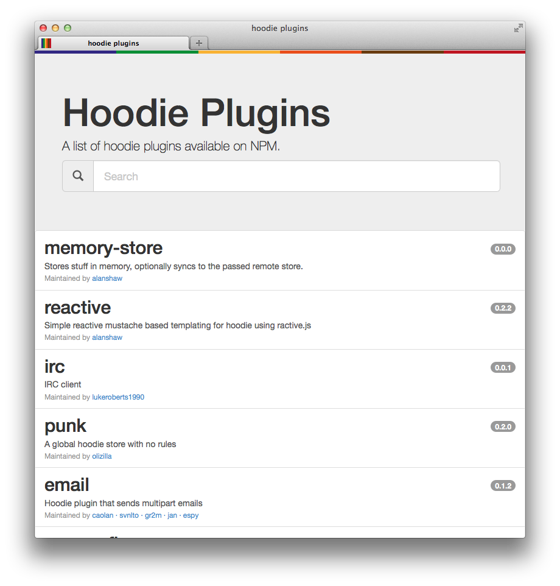

plugins
wait, what is?
Hoodie is a offline first web framework that allows you to develop applications as if there were no backend.
plugin?
plug...in?
hoodie install <plugin>
where are they?
Plugins are just npm modules whose names begin with hoodie-plugin-
plugins.hood.ie
hoodie-plugin-plugins
- Server side plugin
- Does a couchwatch
- Creates a read only couch
usage
var store = hoodie.open("hoodie-plugin-plugins")
store.connect()
store.findAll("plugin").done(function (plugins) {
// Render, or whatever
})
hoodie-plugin-reactive
- Client side plugin
- Uses ractive.js
- Proxy your hoodie stores
- Re-render templates when data ch-ch-changes
usage
var html = '<ul>{{#todos}}<li>{{title}}</li>{{/todos}}</ul>'
hoodie.reactive($('#todolist'), html, function (store) {
var defer = hoodie.defer()
store.findAll('todo').done(function (todos) {
defer.resolve({todos: todos})
})
return defer.promise()
})
hoodie.reaction demo
how to
how to
(client)
hoodie.<plugin>.js
Hoodie.extend(function (hoodie) {
// Init, attach methods to hoodie etc. etc.
})
how to
(server)
index.js
module.exports = function (hoodie, cb) {
// Init, when done, call `cb`
}
these are useful
github.com/espy/hoodie-plugin-tutorialgithub.com/hoodiehq/hoodie-plugins-api
src
- slides
github.com/alanshaw/hoodie-plugins-talk - plugins.hood.ie
github.com/alanshaw/hoodie-plugins-www - hoodie-plugin-plugins
github.com/alanshaw/hoodie-plugin-plugins - hoodie-plugin-reactive
github.com/alanshaw/hoodie-plugin-reactive